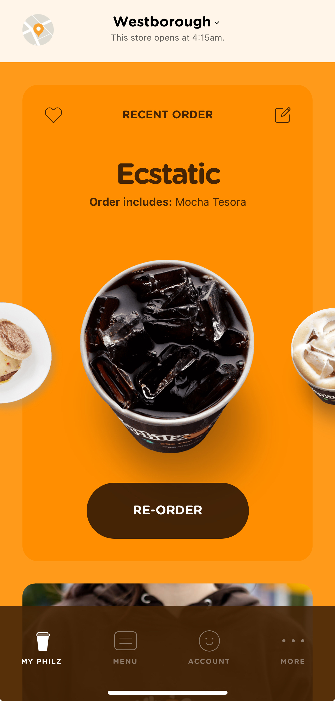
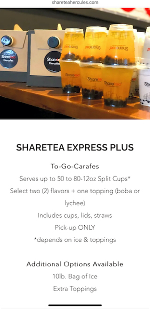
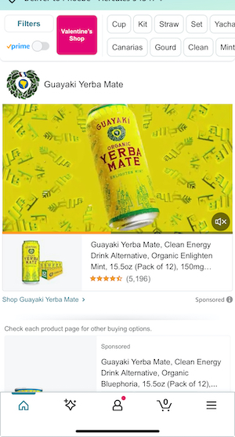

Introduction

Hi my name is Phoebe Julao. My birthday is on January 24th and I'm an Aquarius. I was born and raised in San Francisco. I also moved around the Bay growing up, living in places like South San Francisco and San Mateo. I currently live in Hercules with my dog, Hiero.
I'm a Visual Communications Design major at SFSU. I enjoy mixed media art such as painting, sculpture, and black and white photography. My digital time capsule is a glimpse of my existence in my little corner of the digital world, where everyday apps and media play a daily role in my life as a design student. Though I have many interests and activities I like, this website is a base illustration of what keeps me creative, motivated, and mostly relaxed. Feel free to click on the other tabs and check out more.
I start my day with a cup of...


 

Let's talk about the fuel that powers up my brain: coffee (and a few beverages I like for variety and good measure.) I definitely hydrate with lots of water, but if I need a boost of energy knowing the type of day ahead of me I'll use these apps to order these my usual go-to options. I love iced coffee or cold drinks to keep me awake. Beverage tech is a true gift, with rewards and order and pay options while I'm brainstorming on my design projects.